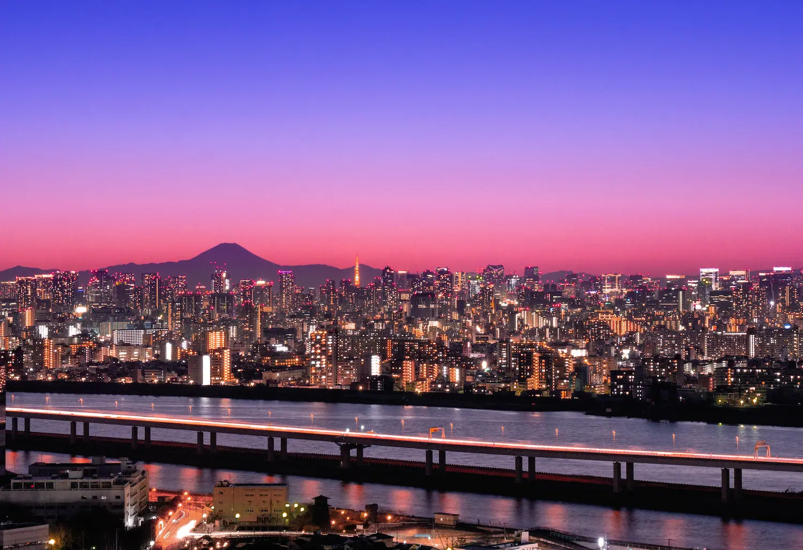
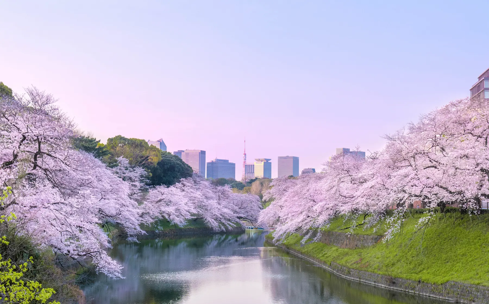
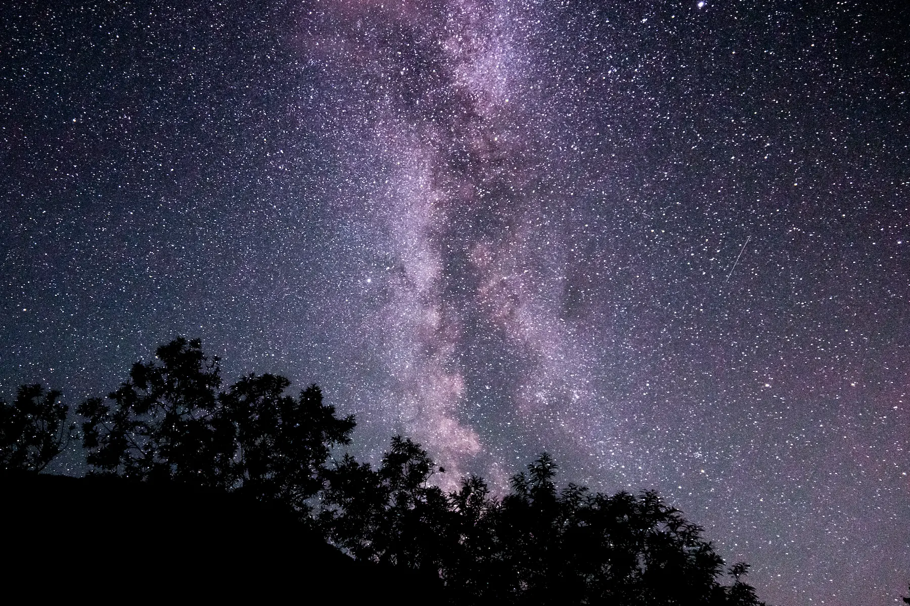
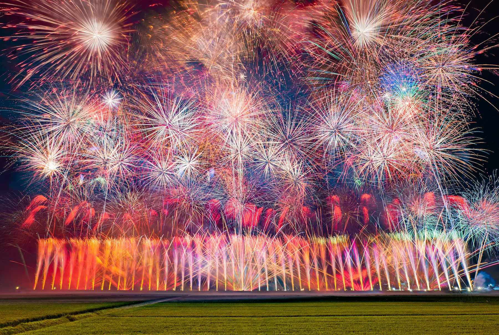
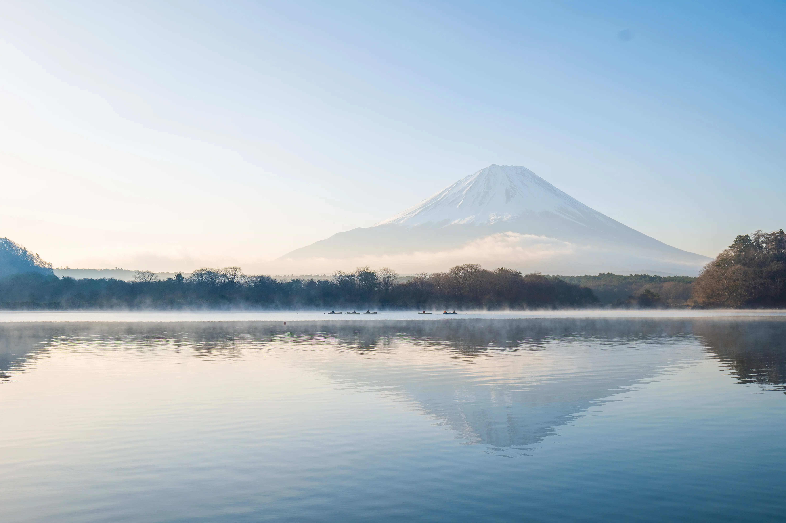
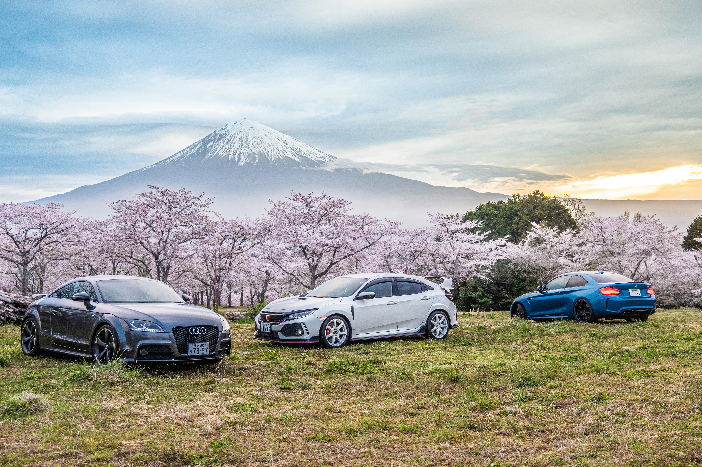
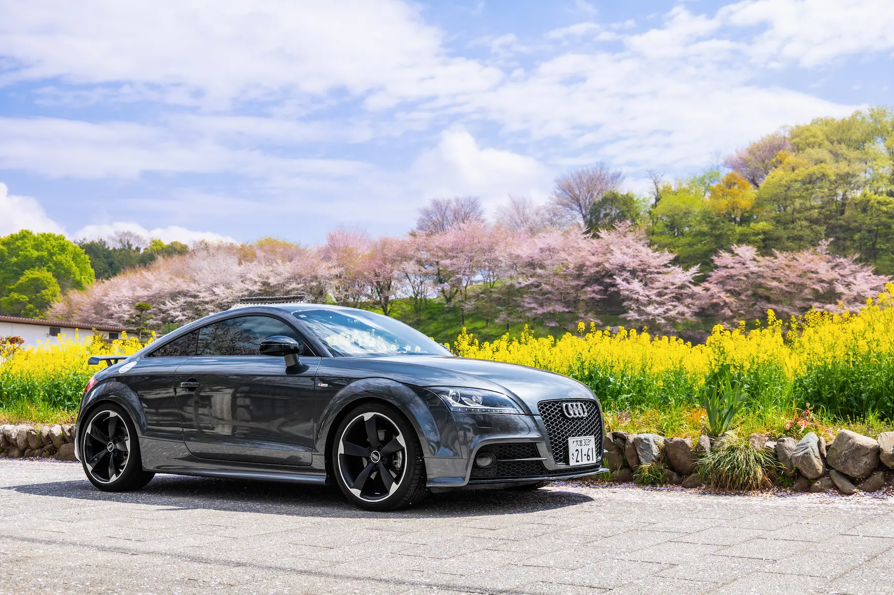

仕事以外の趣味や興味関心をご紹介します
風景や夜景、愛車、人物を中心に撮影しています。
光や空気を意識し、その場所でしか見られない瞬間・魅力を写真に残しています。
高校・大学で写真部長を務め、大学では約90名の部員をまとめました。 展示会や撮影会の運営、渉外活動に取り組みました。
部長として展示会場や告知方法を見直し、芝浦工業大学写真部として過去最多の来場者数となる写真展を企画・開催しました。
高校時代には写真作品で関東大会に出場し、表彰を受けました。（第25回関東地区高等学校写真展）
撮影だけでなく、作品の選定や見せ方にもこだわってきました。
NHK BS8K番組に映像素材を提供し、放送に使用されました。
大学案内パンフレットに使用する写真の撮影を経験しました。

空気が澄んだ日を狙い、東京の夜景と富士山のシルエット、首都高を流れる光跡を一枚に収めました。

日の出前の柔らかな光と、水面を囲む桜の奥行きを意識して撮影しました。

夏の北海道で、肉眼でもはっきり見えるほど澄んだ夜空と天の川を撮影しました。

山形県の赤川花火大会で撮影。エンディングの花火を比較明合成し、約1分間の軌跡を一枚にまとめました。

冬の精進湖で日の出前に撮影。
湖面に漂う朝霧と淡い光から、凍えるような朝の静けさを表現しました。

車好きの仲間と静岡を訪れ、桜と富士山を背景に撮影しました。3台の配置と間隔を調整し、画面全体のバランスを意識しています。
車そのものだけでなく、運転する時間や旅先で出会う景色も好きです。
愛車の手入れやカーオーディオの調整を楽しみながら、
休日には写真撮影を兼ねて各地へドライブしています。

大学のカーデザインの授業で題材として扱ったことをきっかけに知り、その造形に惹かれました。
走行性能とデザインのバランスが魅力で、運転する楽しさを感じさせてくれる一台です。
その他、以下のようなことにも興味を持っています。
ヘッドホン、スピーカー、カーオーディオなど、 機器や設定による音の違いを比較しながら楽しんでいます。
車や鉄道で各地を巡り、風景や街並みを撮影することが好きです。移動そのものも含めて、旅を楽しんでいます。
四間飛車を中心に打ち、オンライン対局やAI解析を使った振り返りを楽しんでいます。
家系ラーメンや豚骨系を中心に、ドライブ先で気になる店を訪れる、ラーメンドライブを楽しんでいます。